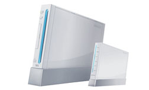
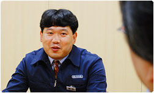

岩田
ニンテンドーWi-Fiネットワークアダプタは
とてもコンパクトでシンプルなデザインになっていますね。
この形に至るまで、どのような試行錯誤があったのですか？
畑山
バッファローさんからの最初の提案には、
このようなデザインもありました。
岩田
最初はちっちゃなＷｉｉだったんですね（笑）。

畑山
この案は、部内ではすごくウケたんです（笑）。
でも、Ｗｉｉの隣に置かれるものじゃないんですよね。
岩田
Wi-Fiネットワークアダプタは、
Ｗｉｉというよりはパソコンのそばに置かれるものですからね。
それにＷｉｉのそばに置いたら、わざわざ無線にする意味もないですし（笑）。
畑山
それに、DSをメインに使われるお客さんにとっては、
Ｗｉｉっぽいデザインにしてしまうのは好ましくないですよね。
さらに、将来は新しいハードが出てくる可能性もありますし、
やっぱり長く使っていただきたい商品ですので、
小さくするという方向性はそのまま生かして、最終的には
任天堂社内でデザインしたシンプルな案を採用しました。
他の無線アクセスポイントと違って、棒状のアンテナがついていないので、
通信速度が遅くなったり、通信距離が短くなってしまうのではないかと
思われる方もいるかもしれませんが、遜色はありません。
岩田
目に見える部分では、どんなところに特徴がありますか？
青山
先ほど話に出ましたが、コネクタの色です。
水色とグレーの２色にすると
コストアップになってしまうのですが、
わかりやすくするためにこだわって採用しました。
それと、前面にあるLEDランプもこだわった部分です。
岩田
一般の無線ルータだと、LEDは6つくらいついてますけど、
これには2つしかついてませんね。
畑山
LEDがたくさんついてると、
部屋を暗くしたとき、少し異様な感じがするんですね。
そこでLEDを2つにして、
必要不可欠な情報をしっかり伝えられるようにしました。
藤原
開発初期の段階では、LEDの発色は緑と赤だったんです。
ところが赤と緑の識別ができにくい方もいらっしゃるということで、
最終的に青と赤の２色に変更しました。
コネクタの色と同じように、ちょっと高くつくんですけど、
そこもがんばりました（笑）。
畑山
さらに、LEDの明るさを決めることについても、
試行錯誤を何度も繰り返しました。
本社ビルのダストルームに試作品を持ち込んで、
「これくらいかな？」「いや、もうちょっと明るく」
なんてことを言いながら、調整しました。
岩田
ダストルームって、ゴミを保管する部屋でしょ？
そんな部屋でやってたんですか（笑）
畑山
部屋を真っ暗にしたときに、まぶしくなりすぎず、
暗くもないという明るさを目指しました。
電灯を切って、真っ暗な状態でやってたんですけど、
いきなり人が入ってきて、びっくりされたこともありましたね。
「そんなところで、何やってんですか！」って（笑）。
岩田
びっくりするのは当然ですよ。
ゴミを捨てにきたら、男達が暗闇にしゃがみこんで、
何かやってるわけですから（笑）。
他にこだわりを持った点はなんですか？
藤原
LANケーブルには結構こだわりましたね。
しなやかさを保ちつつ、引っ張られても
壊れないようなものにするために、何度も試作を行いました。
ちなみに、Wi-Fiネットワークアダプタの耐久性や安全性、対環境性は、
他の任天堂製品と同じ基準で設計されています。
パソコンなどで使う一般のネットワーク機器では
そこまでしないだろう、というくらいの試験を行っています。

岩田
ちなみに無線LANの接続に関しては、どうやって検証したんですか？
畑山
まず最初にやったのは、
専用プログラムでの通信速度や通信距離の測定です。
外部の電波を遮断する狭い部屋で計測して、
次第に廊下や、任天堂本社のフロア内と、エリアを広げてテストしました。
バッファローさんは無線ネットワーク製品を多く作られているメーカーさんなので、
その豊富な技術でたくさんご協力をいただきました。
次に、Wi-Fi対応のソフトがしっかりつながるかどうかの検証です。
ＷｉｉとDSソフトを山のように持ってきて、1本1本確かめました。
サポート外にはなるのですが、無線LAN機能内蔵のパソコンや音楽プレイヤー
などの接続も確認しています。
そのあと、社員にWi-Fiネットワークアダプタのサンプルを
自宅に持って帰ってもらって、異なる条件で
つながるかどうかをひとつひとつ検証しました。
各家庭のインターネット環境はすべて違います。
それはブロードバンド回線の種類の違いだけではなく、
どんなネットワーク機器を接続しているかということでも変わったりします。
無線の場合は、部屋の間取りなども影響してきます。
例えば電子レンジの近くに置くと、電磁波の影響を受けてしまうなんてこともあります。
畑山
ほとんど大丈夫だったんですが、
ダメだったのが、先ほども話にあった青山さんのマンション（笑）。
青山
自動設定でうまく認識してくれなかっただけで
設定を変えることですぐ解決したんですが、
ちょっとキモを冷やしました（苦笑）。
畑山
キモを冷やしたといえば、
社内で通信のテストをやっていたとき、
あまりに切断されるので、どうしてなんだろうと思って、
バッファローさんに来ていただいたことがあるんです。
そしたら「この部屋は電波が飛びすぎてるから切れるのは当然です」って。
岩田
確かに、ネットワーク開発部では、
電波が飛び交っていて、パソコンを立ち上げると、
たくさんの無線ルータが見えますからね（笑）。
畑山
そんなことがあって、通信のテストは
電波のあまり飛んでない社員食堂で行うようにしました（笑）。
岩田
そもそも、Wi-Fiネットワークアダプタが生まれることになったのは
USBコネクタ（※7）がキッカケになったと言っていいんでしょうか。
畑山
共同開発したバッファローさんもびっくりするくらい、
たくさんのUSBコネクタが売れましたからね。
※7 USBコネクタ＝ニンテンドーWi-Fi USBコネクタ。インターネットにつながっているパソコンに接続するだけで、DSやＷｉｉでのWi-Fiコネクションのサービスがカンタンに楽しめるようになる。
岩田
ただ、DSとつなぐにはUSBコネクタは手軽で便利な商品でしたけど、
Ｗｉｉとの相性があまりいいとは言えませんでしたね。
青山
ええ。パソコンを立ち上げたときだけしか
USBコネクタが動きませんから。
「WiiConnect24」（※8）の構想を打ち出している任天堂としては、
Ｗｉｉが24時間ネットにつながることで、
新しい楽しみを体験していただこうと考えていましたので、
相性はあまりよくありませんでしたね。
その意味でも、自社で無線ルータを出すことは急務だと思っていました。
※8 WiiConnect24＝Ｗｉｉはわずか豆電球１個程度の低消費電力でスタンバイモードに入るため、ユーザーが眠っている間も、インターネットを通じていろんな情報を受け取ることができる。
岩田
それでは最後に、お客さんに向けてひと言ずつお願いします。
藤原
わたしはかつて
モバイルアダプタGB（※9）の担当をしたこともあって・・・。
岩田
モバイルアダプタGBって言われても、
「何それ？」っていうお客さんも多いでしょうね。
ゲームボーイと携帯電話をつなぐ周辺機器ですね。
藤原
あれから7〜8年たって、このような製品を担当でき、
とても感慨深いものがあります。
当時と比べれば、通信技術は格段に進歩していますし、
Wi-Fiネットワークアダプタを使ってインターネットにつながれば、
いろんなおもしろいことが、とても快適に体験できますので、
できるだけ多くの方々に楽しんでいただきたいですね。
既に私の家では多くの機器を接続して、大活躍していますよ。
※9 モバイルアダプタGB＝GBカラー、またはGBアドバンスと携帯電話をつなぐ周辺機器のこと。離れた友だちと対戦ができたり、データを受け取ることができた。2002年12月にサービス終了。
畑山
はい。設定がカンタンになったとはいえ
それでも周りには「Ｗｉｉをインターネットにつなぎたいけど、どうやったら
いいかわからない」という方もきっといらっしゃると思うんです。
ネットワークの設定に詳しい方には、そんなときは、これを持って行って、
設定をぜひ手伝ってあげてほしいですね。
あっと言う間につなげてあげれば、友だちからは尊敬されますし、
Wi-Fiでいっしょに楽しむこともできますので。
しかも、「Ｗｉｉネット接続できる人ができない人を手助けして
500Ｗｉｉポイントを両方がもらえるキャンペーン」も予定していますから、
お互いに得することもできます（笑）。
今後も、お客さんにとってもっとネットワークが便利に使えるサービスを
増やせていければと、考えています。
青山
わたし自身、ゲームキューブの時代からずっと、
人と人がネットを通じてつながることによって生まれる楽しさを
お客さんにお伝えしたいと考えながら仕事をしてきました。
その意味で、今回のWi-Fiネットワークアダプタによって
重要なピースがひとつ埋まったような手応えを感じています。
夏には、デジカメで撮影した写真の印刷を注文できる
「デジカメプリントチャンネル」を富士フイルムさんのご協力のもと、
リリースしました。
ここでは、通常のＬ版の印刷だけではなく、フォトブックを
作ることもできますし、Ｍｉｉを使った名刺まで作ることができます。
これもピースの一つですが、
これからもさらに、みなさんに楽しんでいただけるような
ピースをたくさん用意していきたいと思っていますので、
期待して欲しいと思います。
岩田
任天堂としては、この商品だけで、
ＷｉｉやDSはインターネットにつながっていることが当たり前という
状況ができると、考えているわけではありません。
今後も、ＷｉｉやDSをインターネットにつなげていただくために、
やらなければいけないことはたくさんあると思っています。
でも、今回の商品によって、
無線LANの世界を高いハードルに感じていて、
インターネットの世界に踏み出せないようなお客さんたちに対しては、
わかりやすい答えのひとつをご提案できたように思います。
みなさん、本当にお疲れ様でした！